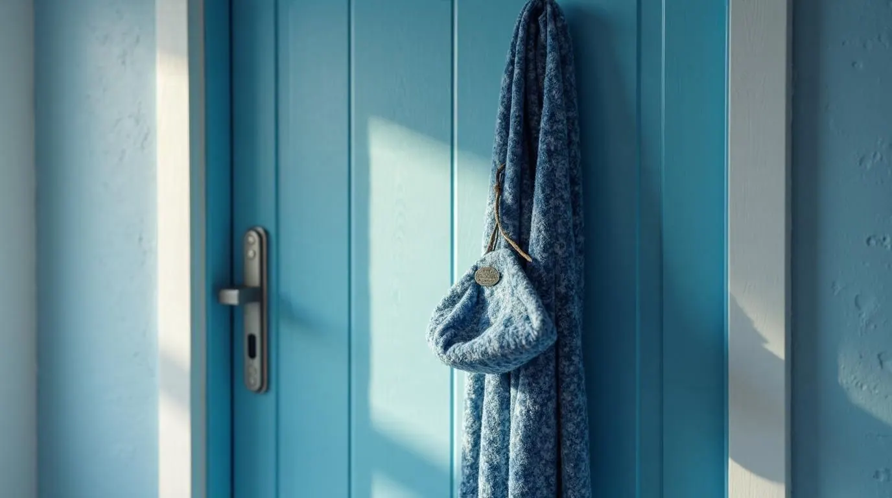

한 줄 답변
기침할 때 가래가 나오는지, 목이 간질간질해서 나는지, 언제 심해지는지를 나눠 적어 오시면 어떤 확인이 먼저 필요한지 판단하는 데 도움이 됩니다.
기침할 때 가래가 나오는지, 목이 간질간질해서 나는지, 언제 심해지는지를 나눠 적어 오시면 어떤 확인이 먼저 필요한지 판단하는 데 도움이 됩니다.
여쭙는 것
- 기침할 때 가래가 나오나요, 목만 간질간질한가요?
- 기침이 시작된 지 얼마나 되었나요?
- 밤, 새벽, 아침, 말을 많이 할 때 중 언제 심한가요?
생활에서 해 볼 것
- 미지근한 물을 자주 조금씩 마시기
- 실내 습도를 적당히 유지하기
- 찬 공기 속에서는 마스크 쓰기
한의원에서 함께 살필 것
- 감기가 지난 뒤 목이 예민해 마른기침이 이어지는 경우 생활 환경과 목의 건조함을 함…
- 말을 많이 한 날 기침과 목 쉼이 심해지는 경우 목 사용 습관과 휴식을 함께 살핍니다.
- 밤 기침 때문에 잠을 설치는 경우 잠자리 환경과 잠의 모양을 함께 살핍니다.
먼저 확인이 필요한 신호
- 기침이 3주 넘게 이어지는 경우
- 피가 섞인 가래가 나오는 경우
- 숨이 차고 쌕쌕거리거나 가슴이 아픈 경우
기침이 오래가면 어떤 기침인지 설명하기가 막막해집니다. 가래가 나오는지, 목이 간질간질해서 나는지, 언제 심해지는지를 나눠 적어 오시면 진료실에서 이야기가 훨씬 정확해집니다.
왜 이런 불편이 생길 수 있나요
- 감기가 지난 뒤에도 목과 기관지가 한동안 예민해 마른기침이 이어지는 경우가 있습니다.
- 가래 섞인 기침은 콧물이 목으로 넘어가거나 기관지에 분비물이 많을 때 생기기도 합니다.
- 건조한 공기, 찬 공기, 담배 연기, 말을 많이 하는 일은 기침을 자극할 수 있습니다.
- 속쓰림이 있는 분은 위산이 올라와 기침이 나는 경우도 있습니다.
- 기침을 오래 하면 목이 더 예민해져 작은 자극에도 기침이 이어지는 경우가 있습니다.

먼저 이렇게 여쭙니다
- 기침할 때 가래가 나오나요, 목만 간질간질한가요?
- 기침이 시작된 지 얼마나 되었나요?
- 밤, 새벽, 아침, 말을 많이 할 때 중 언제 심한가요?
- 숨이 차거나 쌕쌕거리는 소리가 나나요?
- 담배를 피우시거나 주변에 흡연자가 있나요?
일상에서 먼저 해 볼 수 있는 것
- 미지근한 물을 자주 조금씩 마시기
- 실내 습도를 적당히 유지하기
- 찬 공기 속에서는 마스크 쓰기
- 말을 많이 한 날은 목을 쉬게 하기
- 밤 기침이 심하면 늦은 식사 뒤 바로 눕지 않기
예를 들어 밤에만 마른기침이 심하다면 그날 저녁을 먹은 시각과 방의 습도를 적고, 낮에 말을 많이 한 날 심하다면 말한 시간과 마신 물의 양을 함께 적어 보세요.

한의원에서 함께 살필 수 있는 경우
- 감기가 지난 뒤 목이 예민해 마른기침이 이어지는 경우 생활 환경과 목의 건조함을 함께 살핍니다.
- 말을 많이 한 날 기침과 목 쉼이 심해지는 경우 목 사용 습관과 휴식을 함께 살핍니다.
- 밤 기침 때문에 잠을 설치는 경우 잠자리 환경과 잠의 모양을 함께 살핍니다.
좋은꿈참사랑한의원에서는 기침의 모양과 생활 환경을 먼저 듣고, 필요하다고 판단될 때 진맥·설진으로 몸의 상태를 살핀 뒤, 상태에 맞춰 침이나 한약 상담 등을 정합니다. 기침이 오래되었다면 흉부 검사 같은 확인이 먼저 필요한지도 함께 말씀드립니다.
이렇게 기록해 오시면 상담이 쉬워집니다
- 기침이 시작된 날짜(달력에 표시)
- 하루 중 심했던 시간대
- 가래가 있다면 양과 색을 한 단어로
- 실내 습도, 찬 공기, 담배 연기 등 심해지는 상황과 복용 중인 약
- 밤에 기침 때문에 깬 횟수

이런 증상은 먼저 확인이 필요합니다
- 기침이 3주 넘게 이어지는 경우
- 피가 섞인 가래가 나오는 경우
- 숨이 차고 쌕쌕거리거나 가슴이 아픈 경우
- 고열이 며칠째 이어지거나 체중이 줄어드는 경우
복용 중인 약과 흡입기는 처방한 의사와 상의 없이 줄이거나 끊지 않습니다.
한눈에 보는 표
| 구분 | 핵심 |
|---|---|
| 여쭙는 것 | 기침할 때 가래가 나오나요, 목만 간질간질한가요? 기침이 시작된 지 얼마나 되었나요? |
| 생활에서 해 볼 것 | 미지근한 물을 자주 조금씩 마시기 실내 습도를 적당히 유지하기 |
| 한의원에서 함께 살필 것 | 감기가 지난 뒤 목이 예민해 마른기침이 이어지는 경우 생활 환경과 목의 건조함을 함께 살핍니다. 말을 많이 한 날 기침과 목 쉼이 심해지는 경우 목 사용 습관과 휴식을 함께 살핍니다. |
| 먼저 확인이 필요한 신호 | 기침이 3주 넘게 이어지는 경우 피가 섞인 가래가 나오는 경우 |
자주 묻는 질문
기침 소리를 녹음해 가도 되나요?
네. 짧게 녹음해 오시면 기침의 모양을 전달하는 데 도움이 됩니다.
흉부 엑스레이를 찍었으면 결과를 가져가야 하나요?
네. 최근 검사 결과가 있다면 함께 보여 주세요.
기침약을 먹고 있어도 진료를 받을 수 있나요?
네. 드시는 약 이름을 알려 주시면 확인한 뒤 이야기를 이어 갑니다. 약은 처방한 의사와 상의 없이 끊지 않습니다.
아이 기침도 같은 방법으로 적으면 되나요?
네. 아이는 기침 때문에 깨는지, 숨쉴 때 쌕쌕거리는지를 보호자가 함께 적어 오시면 됩니다. 숨이 가쁘면 소아청소년과 진료를 먼저 받으세요.
이 글은 일반적인 건강 정보이며 개인의 진단이나 치료를 대신하지 않습니다. 증상이 있거나 복용 중인 약이 있다면 진료를 통해 확인하세요. 치료 효과는 개인마다 다를 수 있습니다.
지난 이야기부터 이어서 묻습니다
좋은꿈참사랑한의원은 재진 때 지난번 이야기부터 이어서 여쭙니다. 진료시간과 예약은 오시는 길에서 확인하세요.
좋은꿈참사랑한의원은 재진 때 지난번 이야기부터 이어서 여쭙니다. 진료시간과 예약은 오시는 길에서 확인하세요.